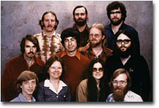

William H. Gates
William H. Gates
Chairman
Microsoft Corporation
William (Bill) H. Gates is chairman of Microsoft Corporation, the worldwide leader in software, services and solutions that help people and businesses realize their full potential. Microsoft had revenues of US$39.79 billion for the fiscal year ending June 2005, and employs more than 61,000 people in 102 countries and regions. On June 15, 2006, Microsoft announced that effective July 2008 Gates will transition out of a day-to-day role in the company to spend more time on his global health and education work at the Bill & Melinda Gates Foundation. After July 2008 Gates will continue to serve as Microsoft’s chairman and an advisor on key development projects. The two-year transition process is to ensure that there is a smooth and orderly transfer of Gates’ daily responsibilities. Effective June 2006, Ray Ozzie has assumed Gates’ previous title as chief software architect and is working side by side with Gates on all technical architecture and product oversight responsibilities at Microsoft. Craig Mundie has assumed the new title of chief research and strategy officer at Microsoft and is working closely with Gates to assume his responsibility for the company’s research and incubation efforts.
Born on Oct. 28, 1955, Gates grew up in Seattle with his two sisters. Their father, William H. Gates II, is a Seattle attorney. Their late mother, Mary Gates, was a schoolteacher, University of Washington regent, and chairwoman of United Way International.
Gates attended public elementary school and the private Lakeside School. There, he discovered his interest in software and began programming computers at age 13.
In 1973, Gates entered Harvard University as a freshman, where he lived down the hall from Steve Ballmer, now Microsoft's chief executive officer. While at Harvard, Gates developed a version of the programming language BASIC for the first microcomputer - the MITS Altair.
In his junior year, Gates left Harvard to devote his energies to Microsoft, a company he had begun in 1975 with his childhood friend Paul Allen. Guided by a belief that the computer would be a valuable tool on every office desktop and in every home, they began developing software for personal computers. Gates' foresight and his vision for personal computing have been central to the success of Microsoft and the software industry.
Under Gates' leadership, Microsoft's mission has been to continually advance and improve software technology, and to make it easier, more cost-effective and more enjoyable for people to use computers. The company is committed to a long-term view, reflected in its investment of approximately $6.2 billion on research and development in the 2005 fiscal year.
In 1999, Gates wrote Business @ the Speed of Thought, a book that shows how computer technology can solve business problems in fundamentally new ways. The book was published in 25 languages and is available in more than 60 countries. Business @ the Speed of Thought has received wide critical acclaim, and was listed on the best-seller lists of the New York Times, USA Today, the Wall Street Journal and Amazon.com. Gates' previous book, The Road Ahead, published in 1995, held the No. 1 spot on the New York Times' bestseller list for seven weeks.
 Top row: Steve Wood (left), Bob Wallace, Jim Lane. Middle row: Bob O'Rear, Bob Greenberg, Marc McDonald, Gordon Letwin. Bottom row: Bill Gates, Andrea Lewis, Marla Wood, Paul Allen. December 7, 1978. |
Gates has donated the proceeds of both books to non-profit organizations that support the use of technology in education and skills development.
In addition to his love of computers and software, Gates founded Corbis, which is developing one of the world's largest resources of visual information - a comprehensive digital archive of art and photography from public and private collections around the globe. He is also a member of the board of directors of Berkshire Hathaway Inc., which invests in companies engaged in diverse business activities.
Philanthropy is also important to Gates. He and his wife, Melinda, have endowed a foundation with more than $28.8 billion (as of January 2005) to support philanthropic initiatives in the areas of global health and learning, with the hope that in the 21st century, advances in these critical areas will be available for all people. The Bill and Melinda Gates Foundation has committed more than $3.6 billion to organizations working in global health; more than $2 billion to improve learning opportunities, including the Gates Library Initiative to bring computers, Internet Access and training to public libraries in low-income communities in the United States and Canada; more than $477 million to community projects in the Pacific Northwest; and more than $488 million to special projects and annual giving campaigns.